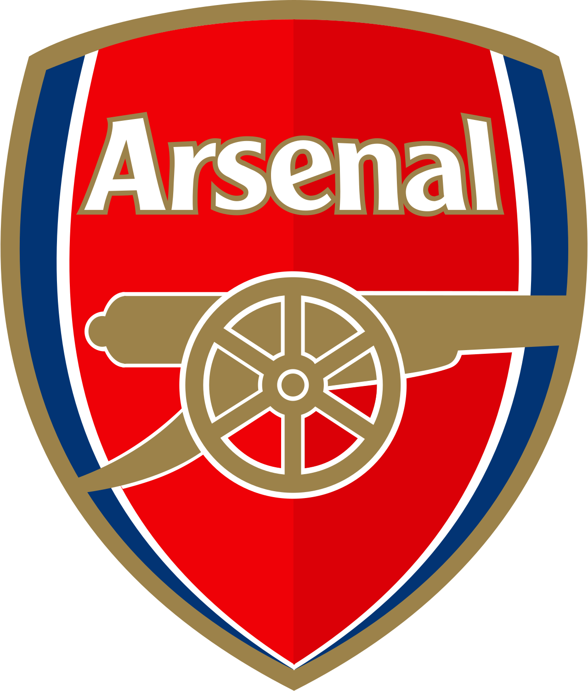
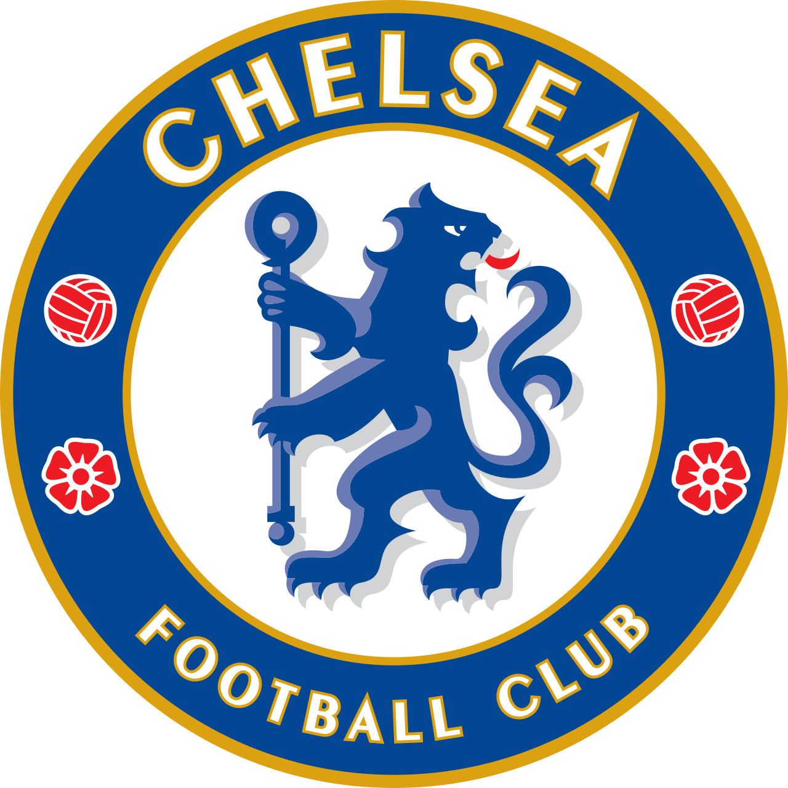

Big Six: los más grandes de Inglaterra
El Big Six es el grupo formado por Manchester City, Manchester United, Arsenal, Chelsea, Liverpool y Tottenham, los seis clubes más poderosos de la Premier League. Se los agrupa así por concentrar históricamente la mayor cantidad de títulos, ingresos y seguidores del fútbol inglés, además de ser los que con más frecuencia clasifican a competiciones europeas. El término ganó popularidad mundial en 2021 cuando los seis intentaron formar la fallida Superliga Europea.
Clubes del Big Six

Manchester City
Dominante en la era moderna bajo Pep Guardiola.

Manchester United
El más exitoso de Inglaterra. 20 ligas y 3 Champions.

Arsenal
Los Invencibles del 2003/04. Renovados con Arteta.

Chelsea
Potencia desde 2003. 2 Champions League y varias ligas.
Liverpool
6 Champions League. Premier ganada en 2025 bajo Arne Slot.
Tottenham
Primer doblete del siglo XX. Finalista de Champions en 2019.
El Big Six representa la élite del fútbol inglés, pero también la creciente brecha entre los clubes más ricos y el resto de la liga. Su dominio económico y deportivo los convierte en referentes mundiales, aunque también genera debate sobre la competitividad y la esencia del fútbol.